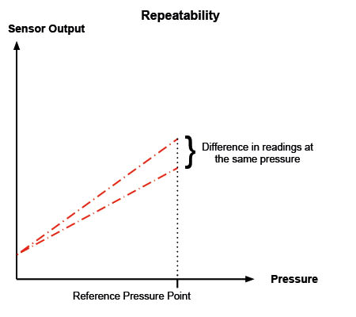
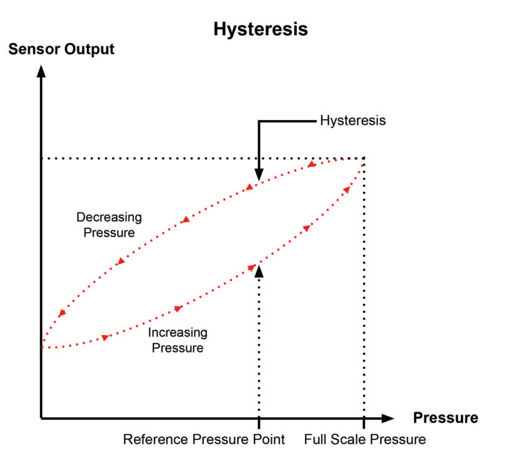
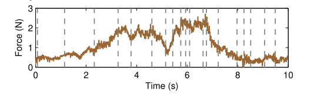
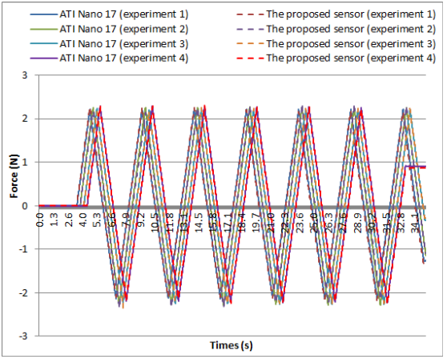
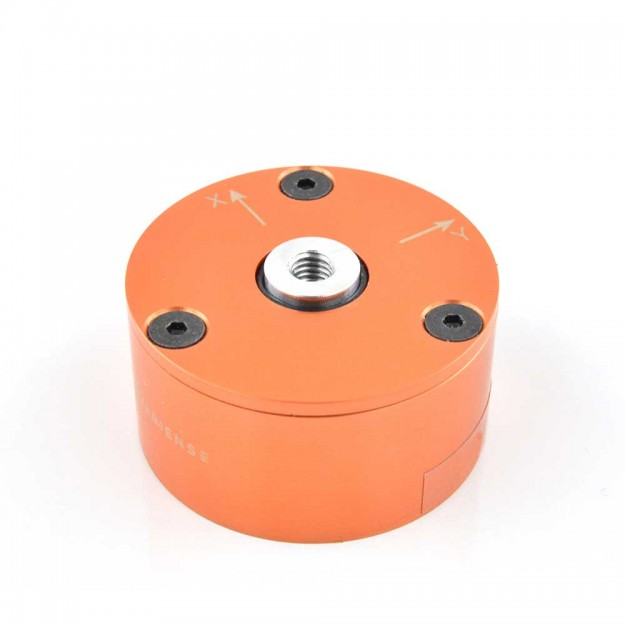
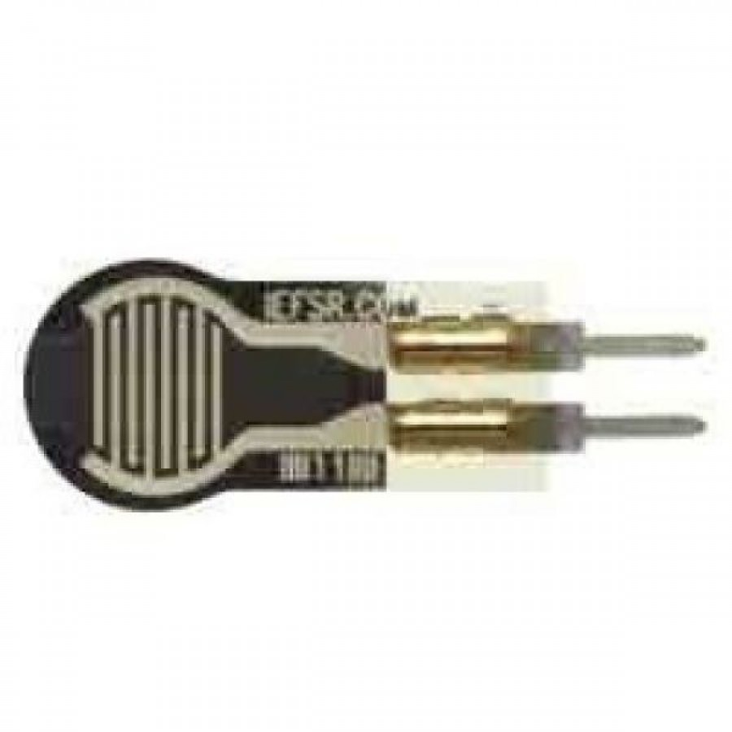
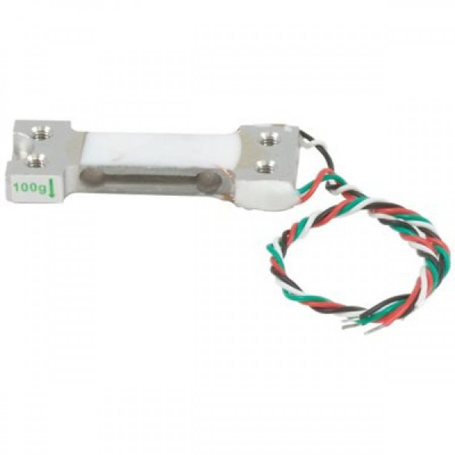
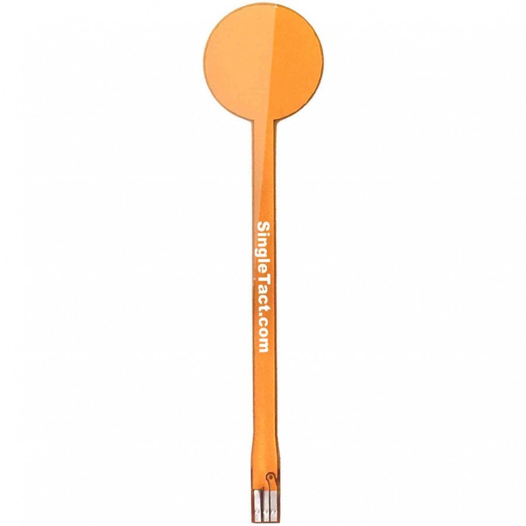
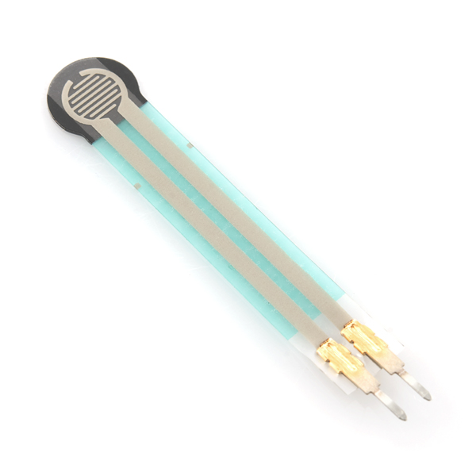

--Slide1
--Slide2
as our measurements are repetitive and almost constant around a value, it is important to take into accoun the repeatability capacity of the force sensor. The more accurate a sensor is the less reapeatability error it has.
Repeatability error is evaluated by measuring the same force and evaluating the output values of the sensor

The hysteresis error of a pressure sensor is the maximum difference in output at any measurement value within the sensor’s specified range when approaching the point first with increasing and then with decreasing pressure.

Mean forces in texture modeling [CUL2014]:

--Slide3
I asked directly in ATI Technologies for their Nano17 sensor. the cost of this device is 5500 USD (including Capture device DAQ). Due its cost I asked the vendor to give me cheaper options and she gave me the Axia80 datasheet. A bigger sensor that does not meet our requeriments at price of 3500 USD.
Nano 17 info [GUO2016]:

--Slide4
Closest option, 3 axis



Link
i2c Interface, Digital DAQ
{28USD}:

--Slide5
We could try to use a resistive sensor (4mm of diameter). It can measure force from 0.1N to 10N depending on the pressure in the measuring region. it is not very accurated but can give us information to start working.

--Slide6
I Started Designin the base. I Drew a sample part Mountv1.stl to test the new 3D printer. I found difficulties when trying to print. First i found that the standar software of BCN3D does not print over usb but only over SD. So I Searched for a software to print. I downloaded Simplify3D (Propietary software that needs to be licenced) and tryed to configure all the printer parameters, I got printed the test part and it fits in the structure. It need to be refined
We need to think in the weigth of the base, it must be higher than the force applied to the texture because it could lift the structure and skewing the measurements
--Slide7
Depends On force sensor choose
Last Step
--Slide8
Bibliography
[CUL2014] Culbertson, H., Unwin, J., & Kuchenbecker, K. J. (2014). Modeling and rendering realistic textures from unconstrained tool-surface interactions. IEEE Transactions on Haptics, 7(3), 381–393. https://doi.org/10.1109/TOH.2014.2316797
[GUO2016] Guo, J., Li, M., Ho, P., & Ren, H. (2016). Design and Performance Evaluation of a Force/Torque Sensor for Tele-Operated Catheterization Procedures. IEEE Sensors Journal, 16(9), 3208–3215. https://doi.org/10.1109/JSEN.2016.2522657